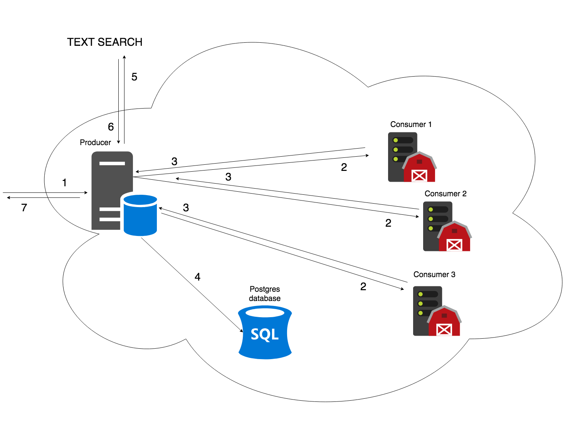

RNAcentral sequence search
Plan:
- RNAcentral sequence search from the user standpoint
- RNAcentral sequence search architecture
- DevOps technologies and methodologies: OpenStack, Terraform, Ansible
- Backend technologies: aiohttp
Current RNAcentral text search takes minutes to 10s of minutes

Demo
Search RNAcentral member databases
Toggle facets provided by EBI text search
Architecture

- user sends search request
- producer maps search to database-specific consumers
- consumers return results to producer
- producer saves result to a database
- producer sends additional query to EBI text search
- EBI text search augments sequence search results with text search facets
- producer returns response
Technology stack
- DevOps: OpenStack Embassy Cloud, Ansible, Terraform, Jenkins, Docker-compose
- Backend: aiohttp, postgres, sqlalchemy, swagger
- Frontend: react, webpack, npm scripts, EBI pattern library, Zurb Foundation
- Bioinformatics: nhmmer
Don't try these at home, kids:
- Kafka + Zookeeper / Kafka Stream
- Akka / Akka Streams
Don't waste time on these technologies, they are good for corporate finance, but not cost-efficient in EBI environment.
Devops: OpenStack cloud
DevOps: Infrastructure as Code (IaC) and Immutable Server
- Hey, Blake, did you update node.js on OY machine?
- Let me check... No, I think, I didn't.
- Anton, did you update node.js on OY machine?
- Not sure, I did something, but I think, not.
Look into Confluence page.
- Hmm... Ah, nevermind, I updated it
myself for SAB 3 moths ago...
Methodologies
- Infrastructure as Code (IaC): You don't document your infrastructure. You program your infrastructure and store it in your repository as code.
- Immutable Server: You don't touch servers with your dirty hands (unless for debugging purposes), you might not even have access to them. Want to modify anything - just edit your IaC and rebuild everything.
Technologies
- Hashicorp Terraform - cross-cloud solution for managing Infrastructure as Code
- Ansible - software installation automation solution
Terraform example
resource "openstack_compute_instance_v2" "consumer" {
count = 10
depends_on = ["openstack_compute_keypair_v2.sequence_search"]
name = "consumer-${count.index + 1}"
image_name = "${var.image}"
flavor_name = "${var.flavor}"
key_pair = "${openstack_compute_keypair_v2.sequence_search.name}"
security_groups = [ "${openstack_compute_secgroup_v2.sequence_search.name}" ]
network {
uuid = "${openstack_networking_network_v2.sequence_search.id}"
fixed_ip_v4 = "192.168.0.${count.index + 7}"
}
}
$ terraform apply$ terraform destroyAnsible basics
- Playbooks
- Plays
- Roles
- Tasks
aiohttp, python3 and cooperative multitasking
Preemptive multitasking vs cooperative multitasking
- Preemptive multitasking is a traditional way of how multitasking is implemented at the Operating System level - via processes or threads. Operating System kernel is responsible for forcibly switching the CPU resources between concurrent processes or threads.
- Cooperative multitasking is an alternative popular implementation of multitasking, where multiple execution 'threads' deliberately pass control to each other, when planning to execute a blocking operation. Examples of this mechanism are coroutines or fibers.
AioHTTP and Python concurrency
David Beasley (2012) on Global Interpreter Lock (GIL):
Performance on a quad-core MacPro 4
- Sequential : 7.8s
- Threaded (2 threads): 15.4s (2X slower!)
Performance if work divided across 4 threads
- Threaded (4 threads) : 15.7s (about the same)
Performance if all but one CPU is disabled
- Threaded (2 threads) : 11.3s (~35% faster than running
- Threaded (4 threads) : 11.6s with all 4 cores)
Think about it...
Advance of coroutines in Python 3
aiohttp